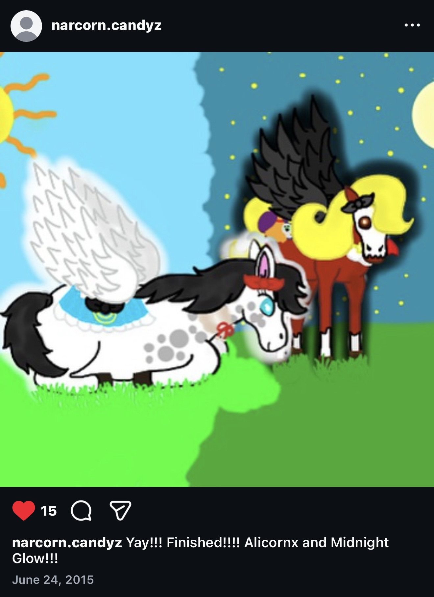
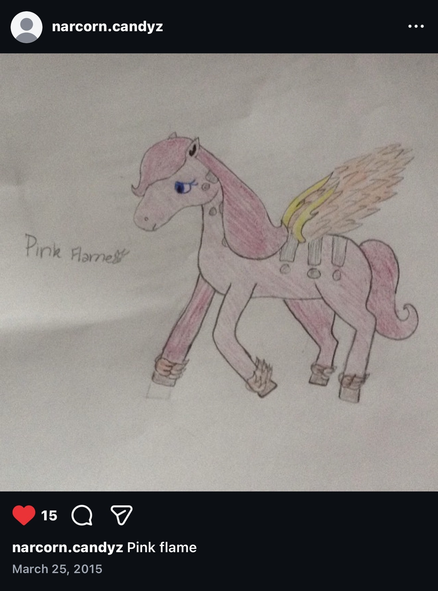
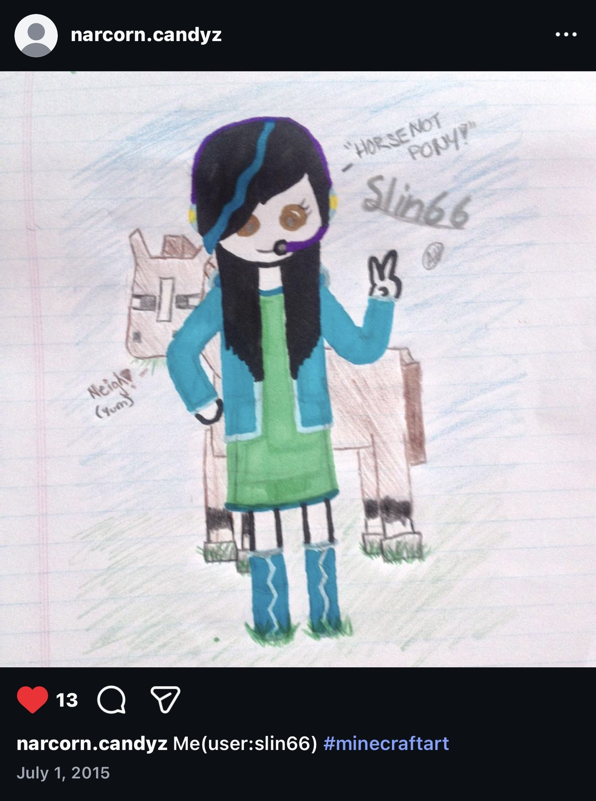
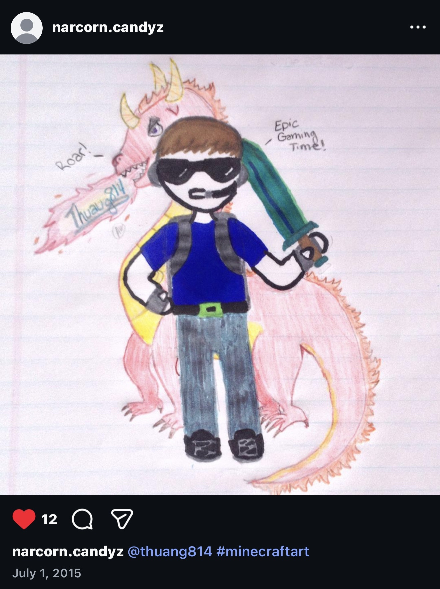
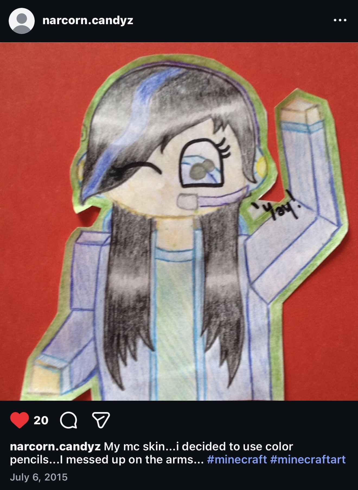
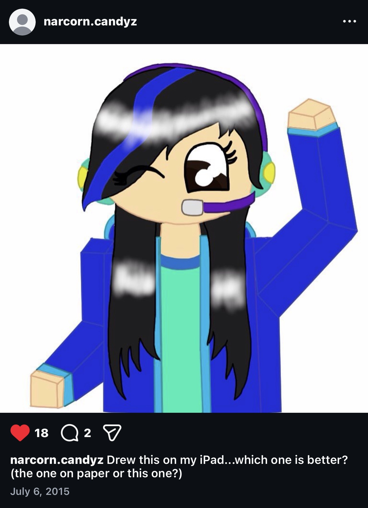
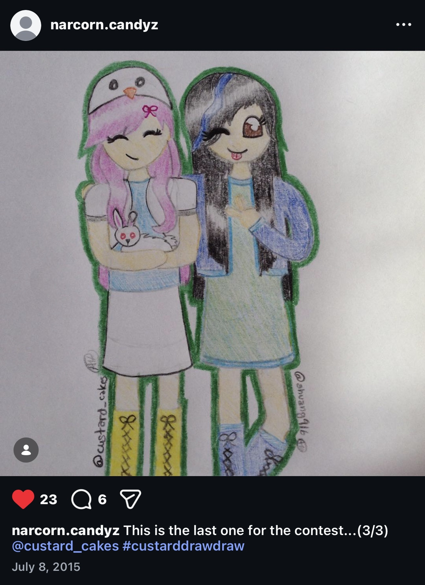
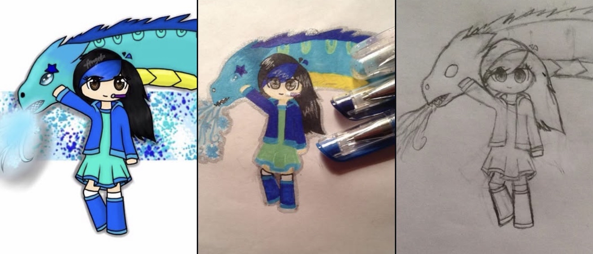
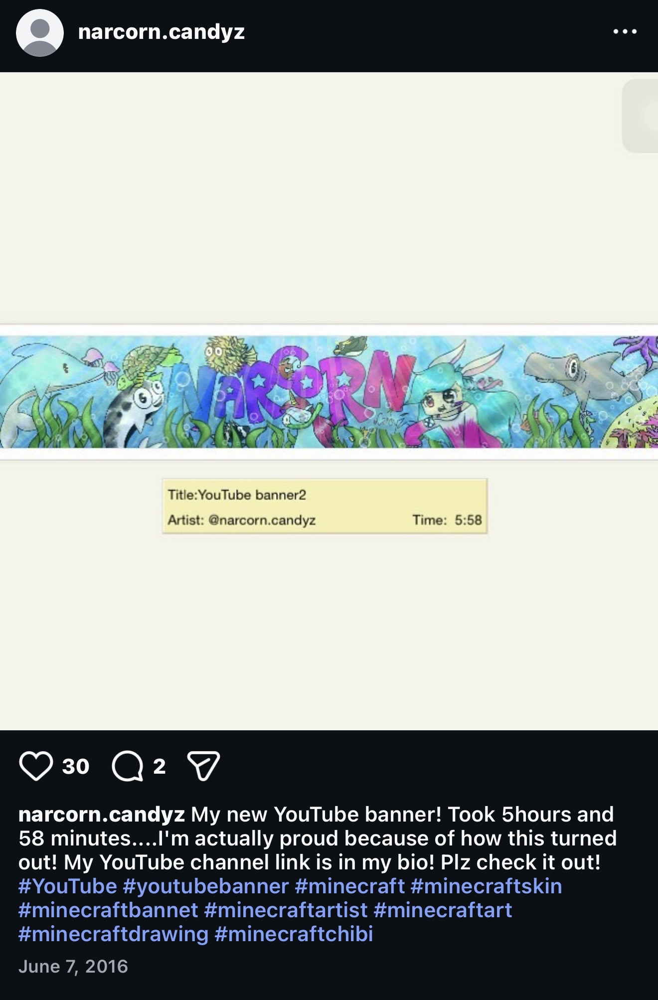
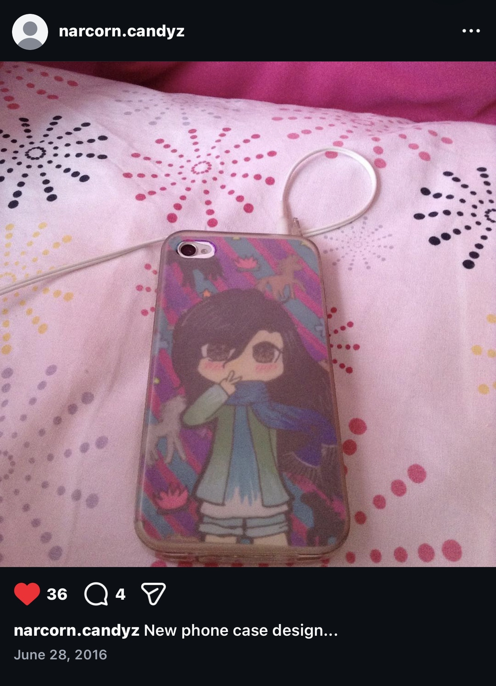

Angel is a self-taught artist who began her creative journey in 2015 under the username, @narcorn.candyz on Instagram. Her artwork grew an audience of over 1,000 followers, but due to inactivity, her social media presence slowed over the years as she focused on her education. Through both traditional and digital art, Angel is back to continue her artistic journey, exploring new techniques, developing her skills, and sharing her passion for creativity and visual storytelling.
Angel's artistic journey began with traditional art and a love for horses, her favorite animal. Inspired by a mobile game called Derby Days(which is no longer available on the App Store), she spent hours drawing horses and exploring her creativity. Over time, her interests shifted toward drawing people, starting with stick figures, then Minecraft-style characters, evolving into a more cartoonish style, and later exploring anime style artworks. She shared her early work on Instagram, where she gained a small but loyal following. By accepting drawing requests from followers and becoming involved in the online art community, she was able to connect with her audience while continuously practicing and improving her craft. Through the community, she also made friends who would draw alongside her, exchange artwork, and support one another's creative journeys. These friendships became a valuable source of motivation, inspiration, and artistic growth.










